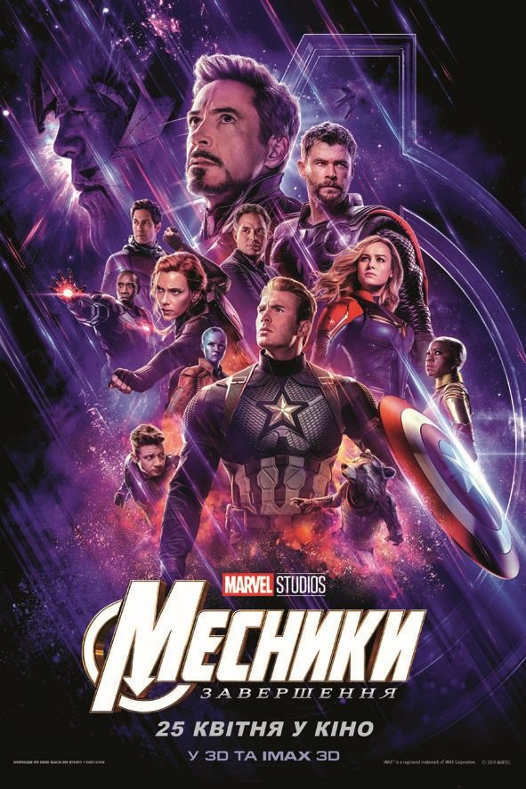

Фільми
Месники: Завершення
СЮЖЕТ
У попередній частині "Месників", яка вийшла у світ у травні 2018 року, половина Всесвіту, як і супергероїв, були знищені Таносом.
Як би не було прикро, але наші герої нічого не могли зробити з цим. Тому вони просто змирилися. Але через 5 років вони відкрили 1 можливий спосіб врятувати друзів.
Не довго думаючи, вони вирішили зробити все, що можливо, не дивлячись на смертельну небезпеку, яка чекала їх на кожному кроці.
Нажаль, у фільмі всерівно не обійшлось без жертв. Але яких, ви дізнаєтеся згодом.
Чи вдалося їм врятувати половину населення всесвіту? І що сталося з Таносом?
Це ви зможете дізнатися вже після перегляду фільму, до чого я вас і закликаю.

Цікаві факти про фільм "Месники: Завершення":
- Це завершальна частина франшизи "Месники" та 22-й фільм виробництва "Marvel Studios" для кінематографічного всесвіту "Marvel".
- Знімальний процес тривав з 10 серпня 2017 року по 11 січня 2018 року.
- Раніше продюсерами були заплановані спільні зйомки фільмів "Месники: Війна нескінченності" і "Месники: Завершення", але пізніше плани змінилися.
- Перший офіційний трейлер фільму "Месники: Завершення" набрав на "YouTube" понад 1 млн лайків за 4 години. За добу трейлер зібрав більше 289 мільйонів переглядів на "YouTube", побивши усі рекорди.
- За словами творців, тривалість фільму "Месники: Завершення" складе 185 хвилин, що зробить його щонайдовшим фільмом виробництва "Marvel" на сьогодні.
- Кіноробота "Месники: Завершення" завершує сюжетну лінію Таноса і "Каменів нескінченності".
- Це друга спільна робота акторів Кріса Еванса та Брі Ларсона, раніше вони знімалися разом у фільмі "Скотт Пілігрим проти усіх".